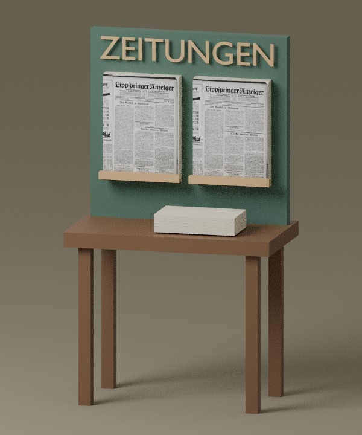
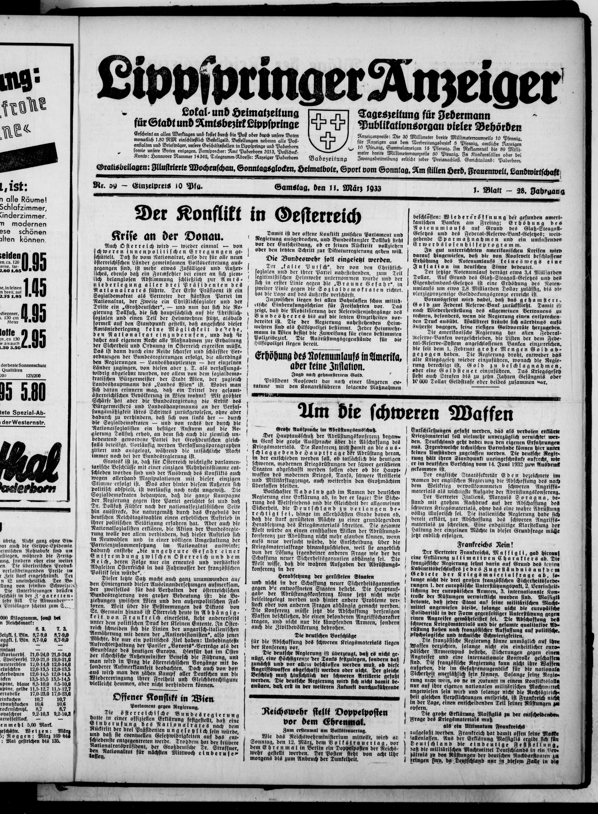
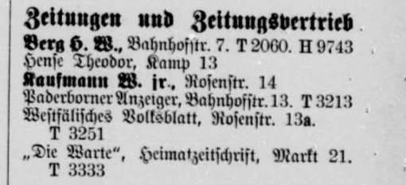
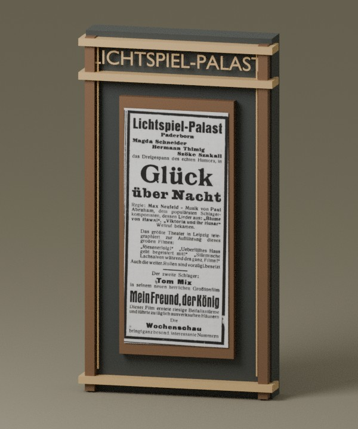
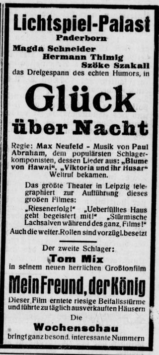
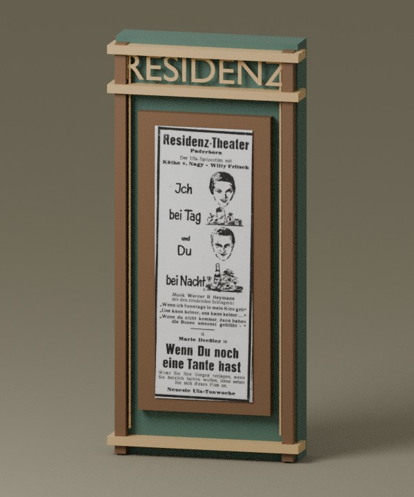
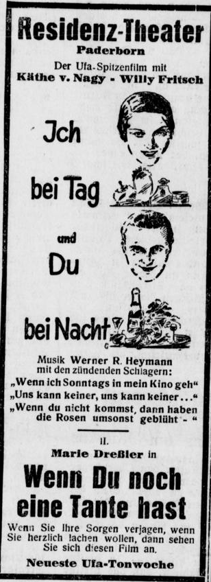

Am Zeitungstisch
Bahnhofstraße 13. Hier führt das Adressbuch 1933/34 den Paderborner Anzeiger. Eine Auslage an dieser Adresse ist als Spieleinstieg plausibel. Bauform, Ladentisch und Verkauf der gezeigten Regionalausgabe sind Annäherungen.
Titelseite vom 11. März 1933 lesen

Der Zeitungskopf lautet Lippspringer Anzeiger. Schon die erste Seite und die beiden Kinoanzeigen führen den Besucher vom politischen Tagesgeschehen in den örtlichen Alltag.
Scan in voller Größe · Quellennachweis
Sechs Paderborner Presseadressen lesen

Adressbuch, Druckseite 339. Die Rubrik belegt Zeitungen und Vertrieb. Ob draußen ein freistehender Kiosk stand, geht daraus nicht hervor.
Scan in voller Größe · Quellennachweis

Lichtspiel-Palast
Westernstraße 14. Das Adressbuch nennt Jos. Böhle mit Lichtspielen an dieser Adresse. In der Samstagsanzeige stehen „Glück über Nacht“, ein Tom-Mix-Film und eine Wochenschau. Der Programmkasten ist eine neu gebaute Typenstudie.
Das Doppelprogramm lesen

Originalanzeige, Digitalisatseite 4. Uhrzeiten oder Eintrittspreise wurden nicht ergänzt.
Scan in voller Größe · Quellennachweis

Residenz-Theater
Leostraße, Volkshalle. Hier konnte der Besucher 1933 Tonfilm erleben. „Ich bei Tag und Du bei Nacht“ ist im Programm des 11. März nachgewiesen. Der Neubau am Marienplatz 16 eröffnete erst am 3. August 1935.
Die Anzeige mit Käthe von Nagy und Willy Fritsch lesen

Originalanzeige im Lippspringer Anzeiger. Die Gestaltung des Kastens ist frei rekonstruiert.
Scan in voller Größe · Quellennachweis